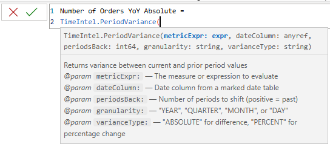
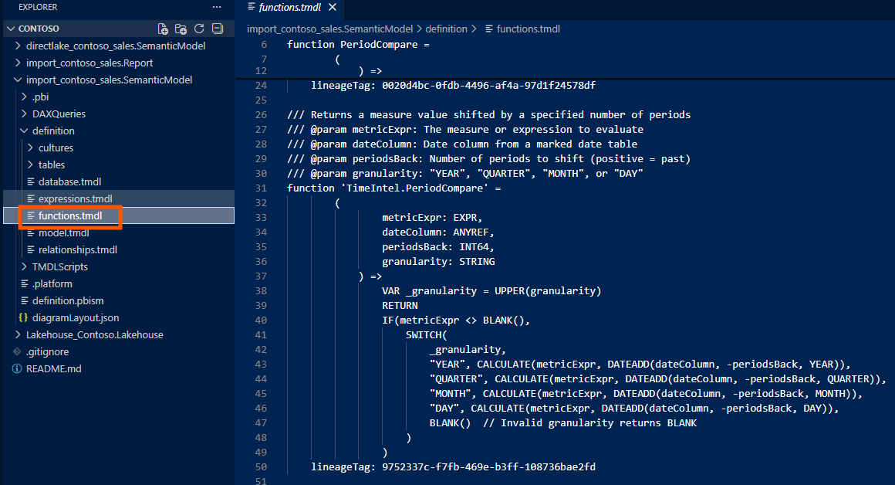

In this writing, I share how I started to learn DAX UDF (User Defined Functions). My journey started right after reading Marco Russo's post on DAX and semantic models announcements at the Fabric Conference 2025. The phrase that caught my attention was this: "I expect that we will look at DAX code without functions like we look at DAX code without variables today." That was enough to make me drop what I was doing and start experimenting after DAX UDF became public preview.
I've written variations of Sales LY, Sales YTD, and Sales vs PY % measures across dozens of semantic models over the years. Every time, I copy-paste from a previous project, then manually replace the table names, column references, and measure names to fit the new model. It works, but it's tedious and error-prone. When I realized that DAX UDFs could eliminate this repetitive work entirely, I knew I had to build something reusable.
In this blog post, I want to share how I designed a portable Time Intelligence UDF library that works across any semantic model, how the TMDL format makes this shareable in Git, and why this changes everything for enterprise DAX development.
What Are DAX User-Defined Functions?
DAX UDFs, introduced in the September 2025 release of Power BI Desktop, let me package parameterized DAX logic into reusable functions. As the Microsoft documentation explains, these are first-class model objects that live alongside my measures, tables, and relationships.
The syntax resembles M more than traditional DAX. I define parameters with type hints, then provide an expression after the => rocket operator. Here's the simplest possible example:
FUNCTION AddTax = (amount: NUMERIC) => amount * 1.1What makes this powerful isn't the syntax—it's the parameter passing modes. As SQLBI's detailed article explains, there are two modes that fundamentally change how my function behaves. VAL (value) parameters are evaluated before the function call, like DAX variables. EXPR (expression) parameters pass an unevaluated expression that the function evaluates in its own context—this is what enables filter context manipulation inside CALCULATE.
Understanding this distinction is critical. If I want my function to work with measures that need context transition, I must use EXPR parameters. This was my first aha moment.
The Portability Problem
Before I started coding, I needed to solve the core design challenge: how do I write a time intelligence function that works in any model?
The typical Sales LY measure looks like this:
Sales LY = CALCULATE([Total Sales], SAMEPERIODLASTYEAR('Date'[Date]))This is tightly coupled to a specific model. It references [Total Sales] and 'Date'[Date] directly. If I copy this to another model that uses 'Calendar'[DateKey] and [Revenue], I have to manually edit everything.
The insight from SQLBI's article on model-dependent versus model-independent functions clarified the solution. A model-independent function has no references to specific tables, columns, or measures—everything comes through parameters. This makes the function portable to any semantic model that can provide the required inputs.
So instead of hardcoding, I needed to accept the measure and date column as parameters. The consumer would pass in their model-specific references, and the function would handle the calculation logic.
Designing TimeIntel.PeriodCompare
My first function needed to replace the common pattern of DATEADD-based period comparisons. I wanted a single function that could handle year, quarter, month, or day shifts—not four separate functions.
Here's the challenge: DATEADD requires a literal keyword (YEAR, QUARTER, MONTH, DAY) for its granularity parameter. I can't pass a variable. This means I had to use a SWITCH pattern to route to the appropriate DATEADD call based on a string parameter.
After several iterations, I arrived at this design:
DEFINE
/// Returns a measure value shifted by a specified number of periods
/// @param metricExpr: The measure or expression to evaluate
/// @param dateColumn: Date column from a marked date table
/// @param periodsBack: Number of periods to shift (positive = past)
/// @param granularity: "YEAR", "QUARTER", "MONTH", or "DAY"
FUNCTION TimeIntel.PeriodCompare = (
metricExpr: EXPR,
dateColumn: ANYREF,
periodsBack: INT64,
granularity: STRING
) =>
VAR _granularity = UPPER(granularity)
RETURN
IF(metricExpr <> BLANK(),
SWITCH(
_granularity,
"YEAR", CALCULATE(metricExpr, DATEADD(dateColumn, -periodsBack, YEAR)),
"QUARTER", CALCULATE(metricExpr, DATEADD(dateColumn, -periodsBack, QUARTER)),
"MONTH", CALCULATE(metricExpr, DATEADD(dateColumn, -periodsBack, MONTH)),
"DAY", CALCULATE(metricExpr, DATEADD(dateColumn, -periodsBack, DAY)),
BLANK() // Invalid granularity returns BLANK
)
)Several design decisions are worth noting. The metricExpr: EXPR type hint ensures the measure expression is passed unevaluated, so CALCULATE can apply context transition properly. The dateColumn: ANYREF accepts any column reference, giving flexibility for models with different date table structures. The UPPER() normalization lets consumers pass "Year", "year", or "YEAR" without breaking. And the BLANK check prevents calculations when there's no data in the current context—keeping visuals clean.
Now any model can use this:
// In a Contoso model
Sales LY = TimeIntel.PeriodCompare([Total Sales], 'date'[Date], 1, "YEAR")
// In a different model with different naming
Revenue LY = TimeIntel.PeriodCompare([Revenue], 'Calendar'[DateKey], 1, "YEAR")Same function, any model. This is the leverage I was looking for.
Building TimeIntel.PeriodVariance
With the comparison function working, I wanted to add a variance function that could return either absolute difference or percentage change. Rather than duplicating the DATEADD logic, I called the first function from within the second—demonstrating UDF composition.
DEFINE
/// Returns variance between current and prior period values
/// @param metricExpr: The measure or expression to evaluate
/// @param dateColumn: Date column from a marked date table
/// @param periodsBack: Number of periods to shift (positive = past)
/// @param granularity: "YEAR", "QUARTER", "MONTH", or "DAY"
/// @param varianceType: "ABSOLUTE" for difference, "PERCENT" for percentage change
FUNCTION TimeIntel.PeriodVariance = (
metricExpr: EXPR,
dateColumn: ANYREF,
periodsBack: INT64,
granularity: STRING,
varianceType: STRING
) =>
VAR _varianceType = UPPER(varianceType)
VAR _currentValue = CALCULATE(metricExpr)
VAR _priorValue = TimeIntel.PeriodCompare(metricExpr, dateColumn, periodsBack, granularity)
VAR _absoluteVariance = IF(_currentValue <> BLANK() && _priorValue <> BLANK(), _currentValue - _priorValue)
VAR _percentVariance = IF(_currentValue <> BLANK() && _priorValue <> BLANK(), DIVIDE(_absoluteVariance, _priorValue) )
RETURN
SWITCH(
_varianceType,
"ABSOLUTE", _absoluteVariance,
"PERCENT", _percentVariance,
BLANK()
)This composition pattern is significant. When I improve TimeIntel.PeriodCompare—adding error handling, supporting new granularities, or optimizing performance—every function that calls it inherits those improvements automatically. This is how professional codebases work, and now DAX can work this way too.

TMDL and the DevOps Connection
From a DevOps standpoint, the real magic happens in the TMDL format. When I save a Power BI project (PBIP), my UDFs appear in functions.tmdl within the definition folder:
ContosoRetailSales.SemanticModel/
├── definition/
│ ├── model.tmdl
│ ├── tables/
│ │ ├── sales.tmdl
│ │ ├── date.tmdl
│ │ └── ...
│ ├── relationships.tmdl
│ └── functions.tmdl ← UDFs live here
├── .platform
└── definition.pbism
The functions.tmdl file is plain text—which means standard Git workflows apply. I can diff UDF changes in pull requests, see exactly who modified a business calculation and when, roll back broken functions to a previous commit, and branch experimental UDFs without affecting production.
Here's what the TMDL content looks like:
/// Author: Jihwan Kim
/// Version: 1.0.0
/// Returns a measure value shifted by a specified number of periods
/// @param metricExpr: The measure or expression to evaluate
/// @param dateColumn: Date column from a marked date table
/// @param periodsBack: Number of periods to shift (positive = past)
/// @param granularity: "YEAR", "QUARTER", "MONTH", or "DAY"
function 'TimeIntel.PeriodCompare' =
(
metricExpr: EXPR,
dateColumn: ANYREF,
periodsBack: INT64,
granularity: STRING
) =>
VAR _granularity = UPPER(granularity)
RETURN
IF(metricExpr <> BLANK(),
SWITCH(
_granularity,
"YEAR", CALCULATE(metricExpr, DATEADD(dateColumn, -periodsBack, YEAR)),
"QUARTER", CALCULATE(metricExpr, DATEADD(dateColumn, -periodsBack, QUARTER)),
"MONTH", CALCULATE(metricExpr, DATEADD(dateColumn, -periodsBack, MONTH)),
"DAY", CALCULATE(metricExpr, DATEADD(dateColumn, -periodsBack, DAY)),
BLANK() // Invalid granularity returns BLANK
)
)
/// Author: Jihwan Kim
/// Version: 1.0.0
/// Returns variance between current and prior period values
/// @param metricExpr: The measure or expression to evaluate
/// @param dateColumn: Date column from a marked date table
/// @param periodsBack: Number of periods to shift (positive = past)
/// @param granularity: "YEAR", "QUARTER", "MONTH", or "DAY"
/// @param varianceType: "ABSOLUTE" for difference, "PERCENT" for percentage change
function 'TimeIntel.PeriodVariance' =
(
metricExpr: EXPR,
dateColumn: ANYREF,
periodsBack: INT64,
granularity: STRING,
varianceType: STRING
) =>
VAR _varianceType = UPPER(varianceType)
VAR _currentValue = CALCULATE(metricExpr)
VAR _priorValue = TimeIntel.PeriodCompare(metricExpr, dateColumn, periodsBack, granularity)
VAR _absoluteVariance = IF(_currentValue <> BLANK() && _priorValue <> BLANK(), _currentValue - _priorValue)
VAR _percentVariance = IF(_currentValue <> BLANK() && _priorValue <> BLANK(), DIVIDE(_absoluteVariance, _priorValue) )
RETURN
SWITCH(
_varianceType,
"ABSOLUTE", _absoluteVariance,
"PERCENT", _percentVariance,
BLANK()
)For teams maintaining multiple semantic models, I could store my UDF library in a shared repository and import the functions.tmdl content into each model's definition folder during CI. The library becomes a versioned dependency—update once, deploy everywhere.
DAX Lib: Sharing with the Community
As Marco Russo announced in his introduction to DAX Lib, SQLBI has created an open-source repository at daxlib.org where the community can share model-independent functions. The site already hosts over 30 libraries covering SVG visuals, formatting, conversions, and common calculation patterns.
Using DAX Lib is straightforward: copy the TMDL script from the library page, paste it into your model's TMDL view in Power BI Desktop, and apply. Submitting your own library follows a similar process—you contribute well-documented, model-independent functions that any developer can import and use immediately.
The naming convention matters here. Model-independent functions intended for DAX Lib should use a library prefix (like TimeIntel.) to avoid conflicts when multiple libraries are imported into the same model. SQLBI's naming conventions documentation recommends reserving Local. prefix for model-dependent functions that won't be shared.
Reflections
Building this library changed how I think about DAX development. The era of copy-paste-modify across models is ending. With UDFs, I can invest time once in a well-designed, thoroughly tested function, then reuse it everywhere without modification.
The combination of UDFs, TMDL, and Git integration creates something genuinely new: a proper software engineering workflow for semantic model development. Functions are versioned, diffable, testable, and shareable. This is what enterprise-scale DAX development should look like.
I hope this inspires you to find the patterns in your own models that deserve to become portable functions—and perhaps contribute them back to the community through DAX Lib.